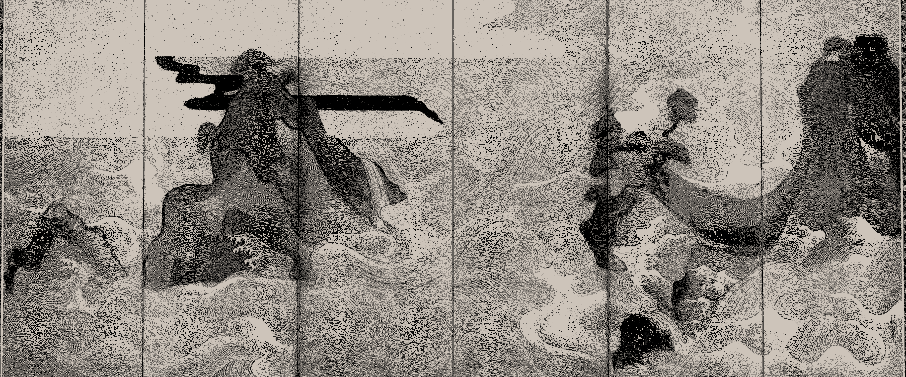
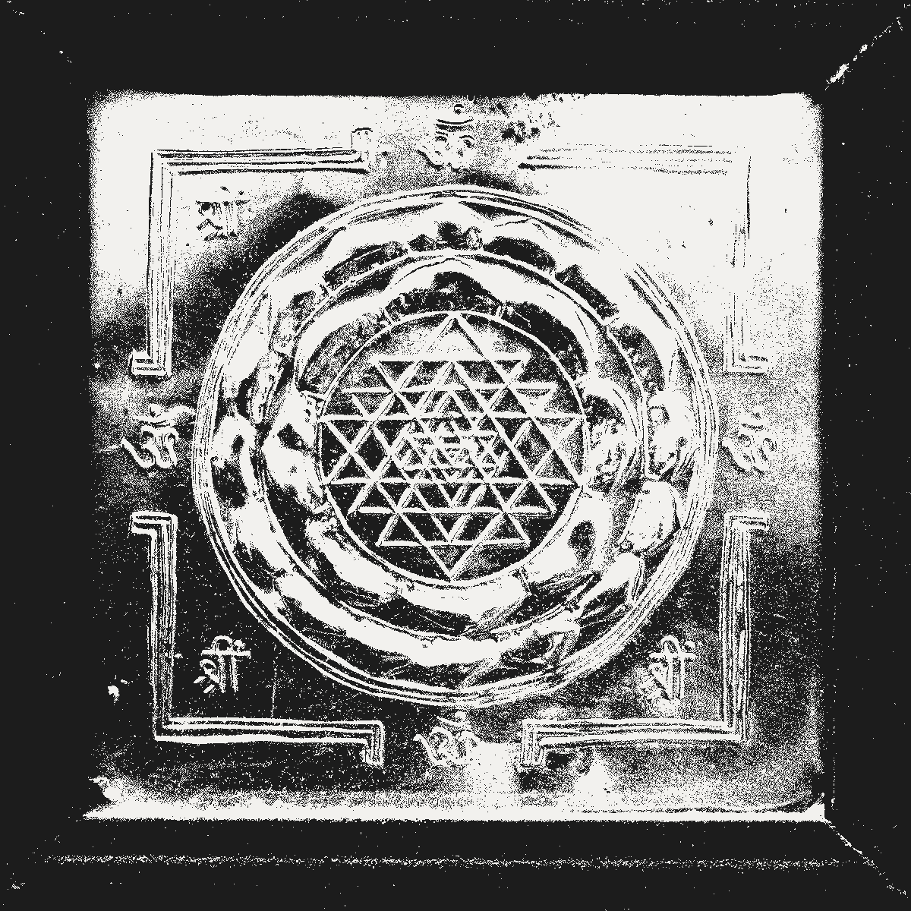

01 The researcher
About
What the light falls on, in order: training, then questions, then everything outside the work.
I completed an integrated B.Tech + M.Tech in Cyber Security at the National Forensic Sciences University in May 2026, and I'm now finishing a B.S. in Data Science at IIT Madras, expected May 2027.
My research sits at the boundary between mathematics, quantum information theory and applied cybersecurity: open problems in pure mathematics, quantum Shannon theory (entropy, channels, coding), exact diagonalization for many-body systems, lattice-based integer factorization, and the validation frameworks that make any of this trustworthy. Quantum error-correcting codes, where several of these threads meet, is where I'd like to go next.
Outside of research I write systems software, maintain a homelab, occasionally design my own keyboards, and have served on the organising committees of internet-governance forums.
The fastest way to reach me is email. I read everything.
- Based in
- Pune, India
- Degrees
- B.Tech + M.Tech, Cyber Security (NFSU, 2026)
B.S., Data Science (IIT Madras, expected 2027) - Languages
- English, Hindi, Marathi, Japanese (learning)
- Elsewhere
- Google Scholar · ORCID
- Research, mapped
- Mathematics × quantum information × cybersecurity, in the diagram behind this text.
02 Where I've worked
Experience
The path, mapped by where the work actually happened.
Research Intern (Internship)
Built CERTIFY-ED, a benchmarking framework for noisy low-scale quantum systems.
- Developed a benchmarking framework for quantum computers using exact diagonalization algorithms (CERTIFY-ED) for system validation.
- Delivered exact results for benchmarking Noisy Low-Scale Quantum (NLSQ) systems, contributing to the evaluation of quantum computational capabilities.
- Authored the methodology now on arXiv and being submitted to SciPost.
Research Intern (Internship)
Hybrid quantum–classical algorithms for integer factorization (Babai + Schnorr + QAOA).
- Designed hybrid quantum algorithms combining Babai's and Schnorr's algorithms with QAOA for enhanced computational efficiency.
- Authored a research paper on integer factorization using lattice-based quantum algorithms, published in Springer Nature SN Computer Science.
Security Researcher & Mentor (Internship)
Built an intelligence platform for India's Ministry of Home Affairs; trained judicial officers and LEAs. Details are under NDA.
- Built an intelligence platform for the Ministry of Home Affairs (I4C), covering data collection, cleansing and entity correlation, delivered with documentation and training for non-technical users.
- Conducted specialised training sessions for judicial officers and LEAs on cybersecurity best practices and investigation techniques.
- Details of the platform's internal workings, data and findings are covered by an NDA.
Section Leader (Internship)
Returning section leader for CS106A, second cohort.
- Led weekly sections for CS106A: Introduction to Python, returning for the second offering.
- Continued the LLM-integration work piloted in the 2025 cohort.
- Mentored students from over a dozen countries through Karel and into idiomatic Python.
Section Leader (Internship)
Led weekly Python sections for global students, using the Karel pedagogy.
- Led weekly sections for CS106A: Introduction to Python, supporting students through the Karel pedagogy.
- Facilitated integration of LLMs into course materials, exploring AI applications in Python.
- Collaborated with Stanford instructors on interactive activities and assignments for a global audience.
Research Intern (Internship) · Remote (Canberra, Australia)
Quantum key distribution and teleportation-based interstellar communication.
- Investigated advanced key-distribution protocols employing quantum cryptographic techniques to improve secure communications.
- Proposed a novel framework for utilising quantum teleportation in interstellar communication, advancing quantum networking protocols.
Research Intern (Internship)
CALDERA + MITRE ATT&CK threat simulation and incident triage.
- Established CALDERA and MITRE ATT&CK frameworks for threat simulations, improving the lab's cybersecurity capabilities.
- Triaged and analysed simulated cybersecurity incidents, identifying vulnerabilities, and strengthening response strategies.

03 What I've built
Projects
What got made while looking for an answer.
CERTIFY-ED
Mar 2026Quantum simulations are only as trustworthy as the implementations that produce them. CERTIFY-ED is a multi-oracle validation framework cross-checking quantum many-body simulations across SageMath, NumPy and Lanczos methods. Achieved relative error below 10⁻¹¹ and 12-digit agreement with analytical solutions; the validation backbone for CDAC's NLSQ work. Preprint on arXiv, being submitted to SciPost.
symveig
Jun 2026An eigenvalue solver returns a number, not a guarantee. symveig extends CERTIFY-ED with verified eigenvalue enclosures, using symmetry-sector decomposition to keep certification tractable as system size grows. Released open source with a Zenodo-archived test suite; submitted to Computer Physics Communications.
OSINT Platform for I4C
Mar 2025Built during an internship at India's Ministry of Home Affairs (I4C): an intelligence platform covering data collection, cleansing and entity correlation, delivered with documentation and training for non-technical users. Details of internal workings, data and findings are covered by an NDA; the code is not public.
dotman
Jun 2025A modular dotfiles manager with a terminal UI, written in Bash and Python, Git as the storage backend. Supports profiles, machine-specific overlays, and a dotman doctor command that diagnoses broken symlinks across a fleet of machines. Built because every existing one annoyed me.
rdd
Apr 2025A memory-safe reimplementation of GNU dd in Rust with built-in BLAKE3/SHA-256 verification and an extensible I/O architecture: adding a new source or sink is one file. Contributed back upstream to the GNU coreutils mailing list.
Integer factorization with lattices and QAOA
Jul 2024CDAC summer internship work: combined Babai's nearest-plane algorithm with Schnorr's reduction, using QAOA as the closest-vector solver, to test whether Schnorr's lattice-based factorization becomes computationally viable with a quantum accelerator. Published as a Survey of Integer Factorization using Lattice-Based Algorithms in Springer Nature SN Computer Science.
Custom mechanical keyboard
Dec 2024Designed a split keyboard end-to-end: schematic in Ergogen, routing in KiCad, fabrication via JLCPCB. ATmega32U4 brain, firmware is a QMK fork with a custom home-row-mod layer. Lesson learned the hard way: the first prototype is supposed to be wrong.
reconGram
Feb 2024A Python tool gathering public reconnaissance data from Instagram profiles for investigative use: connected accounts, post metadata, geolocation tags where present, mutual follows, cross-platform handle correlation. Built for the I4C engagement, later open-sourced with the sensitive bits removed.
map-this
Jan 2024A scraping and visualisation pipeline turning public cybercrime.gov.in reports into a localised, interactive map. Built as a teaching aid for LEA training: where complaints cluster geographically tells you more in 30 seconds than a quarterly report does in 30 pages.
neiro (音色)
May 2026A free, public music archive: a zero-infrastructure static site built directly over a GitHub repository. No backend, no database, no tracking. The archive lives entirely in version control, forkable and free to host.
04 Papers and preprints
Publications
What's been written down, checked, and made to hold.
Survey of Integer Factorization Using Lattice-Based Algorithms
CERTIFY-ED: A Multi-Layer Verification Framework for Exact Diagonalization of Quantum Many-Body Systems
symveig: Verified Eigenvalue Enclosures for Symmetry-Decomposed Hermitian Matrices
Hierarchical Quantum-Accelerated Federated Learning for Scalable, Auditable, Cross-Enterprise AI Governance
Bits to Qubits and Shor (book chapter)
First author
Some Results on Cumulative Residual Inaccuracy Measure of k-Record Values

05 Certificates and skills
Credentials
Proof of practice, and the tools it's practiced with.
Certificates & fellowships
Skills
Cybersecurity
OSINT, Digital Forensics, Threat Intelligence, MITRE ATT&CK, Incident Response
Quantum Computing
Qiskit, PennyLane, Quantum Algorithms, Quantum Cryptography, Many-Body Systems, Exact Diagonalization
Programming
Python (primary), Rust, C, C++, Java, Bash, SQL, R
Machine Learning & AI
PyTorch, TensorFlow, scikit-learn, LangGraph, LangChain, MCP, RAG, FAISS, Ollama, NLP, Statistics
Scientific Computing
NumPy, SciPy, Pandas, SageMath, mpmath
Systems & Tools
Linux (Arch, bare-metal administration), Docker, Git, GitHub Actions, FastAPI, AWS (foundational), Proxmox, pfSense, Snort, KiCad, Ergogen, QMK firmware
06 Common questions
FAQ
The questions that keep coming back around.
Are you available for work?
Yes, selectively. I'm interested in:
- Research collaborations on quantum benchmarking, quantum information, post-quantum cryptography, or hybrid classical–quantum algorithms.
- Short consulting engagements on OSINT tooling, threat intel pipelines, quantum informatics or LEA-facing systems.
- Speaking / teaching opportunities.
Email is the fastest way to start a conversation: sarangvehale2@gmail.com.
Can I see the source code for this site?
Yes — it's on GitHub. One HTML file, hand-written, no build step. Feel free to fork it.
How can I keep up with what you publish?
My Google Scholar profile is the most up-to-date list of papers. For code: GitHub (research-related; general-software).
07 Reach out
Contact
Where this thread meets the next one.
The fastest way to reach me is email. I read everything and reply to most things within a few days. Happy to talk about research collaboration, OSINT tooling, quantum benchmarking, custom keyboards, or homelab oddities.
For longer threads I'm on GitHub. For professional pings, LinkedIn.